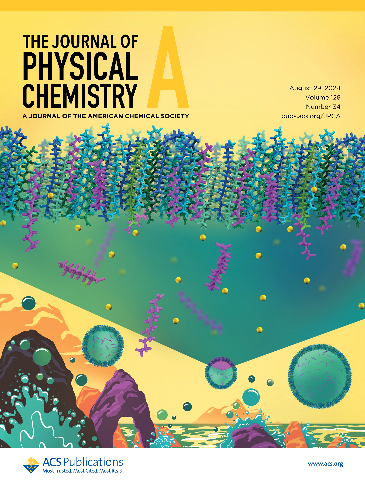
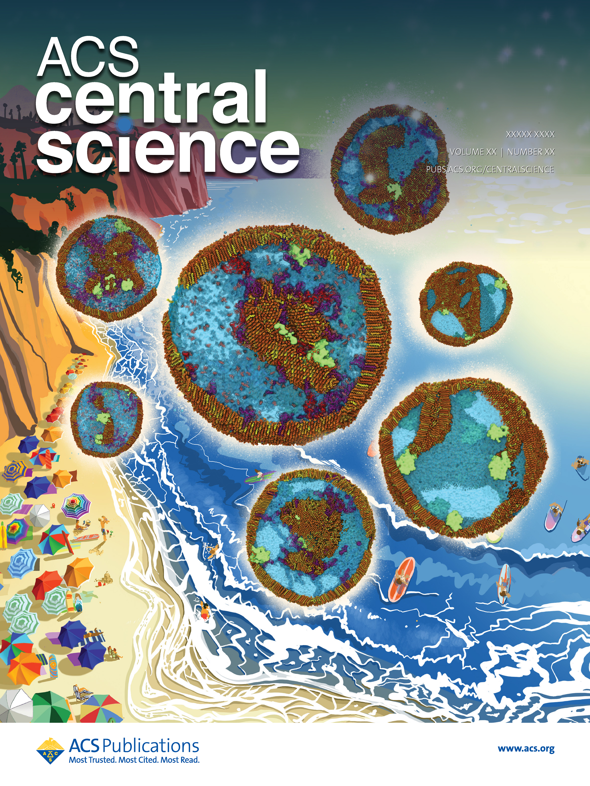
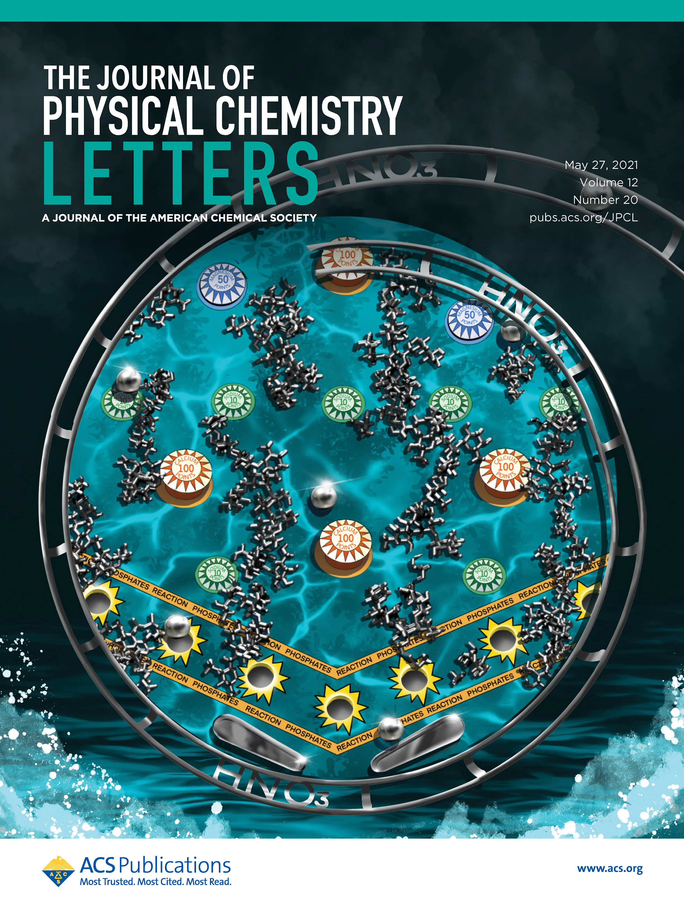
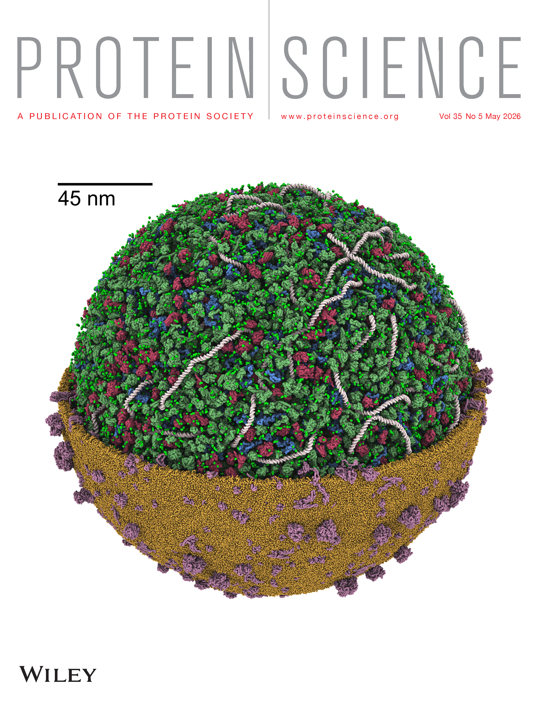

Computational Aerobiology at Georgetown
Exploring the world of bioaerosols and pathogen transport with molecular simulation
Scroll to explore
Exploring the world of bioaerosols and pathogen transport with molecular simulation
It's what we've all been waiting for... Standing invitation to any visitors who want to have a coffee and sit on the new couch in Abby's office. Come on over to Regents 424 (but bring your own coffee).
Our latest publication about the dynamics of enzymes at the air/ocean surface and within sea spray aerosols is out in ACS Earth and Space Chemistry
The Computational Aerobiology Laboratory now lives at Georgetown University in Washington, DC! We are located on the 3rd and 4th floors of Regents Hall on the Hilltop Campus. Come Visit Us!
The Computational Aerobiology Lab has recently joined the Department of Chemistry at Georgetown University. The group uses molecular dynamics simulations to understand the morphology of biological aerosols and the mechanisms governing airborne pathogen transmission.





